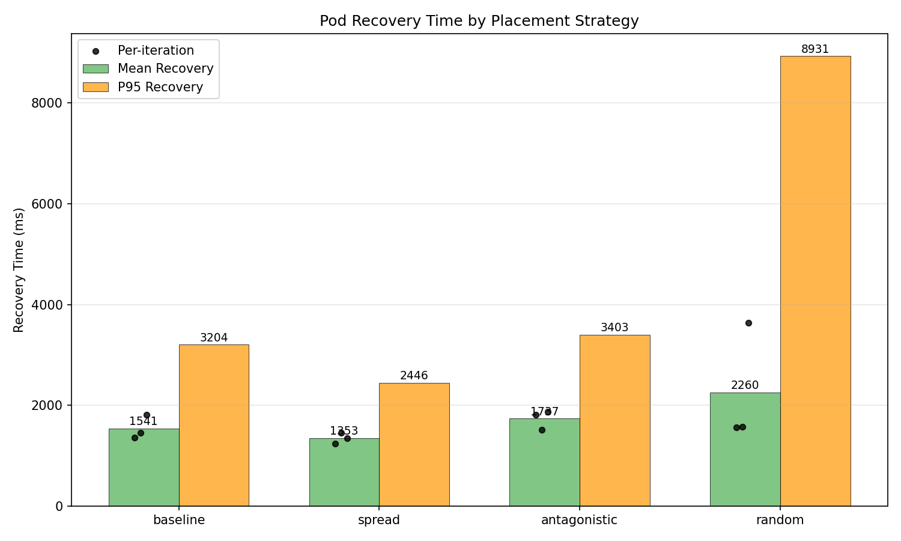
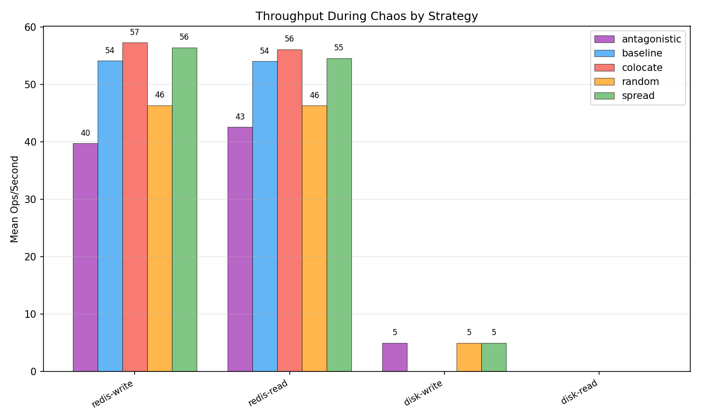
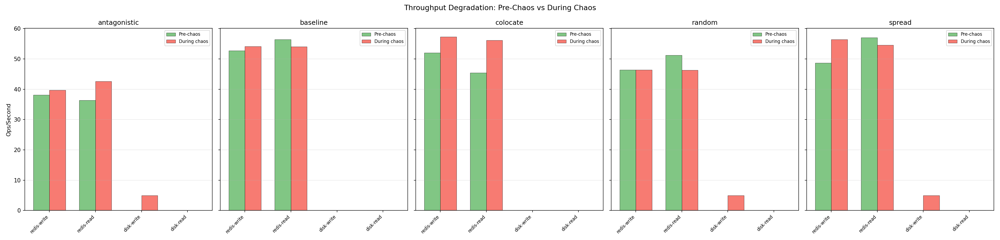
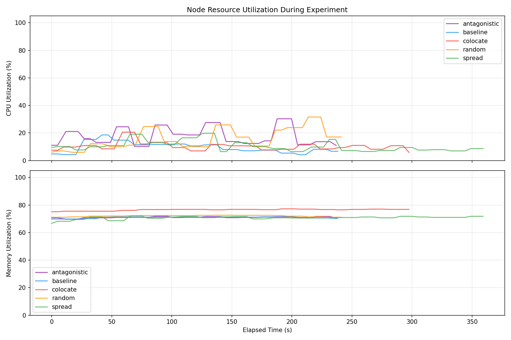
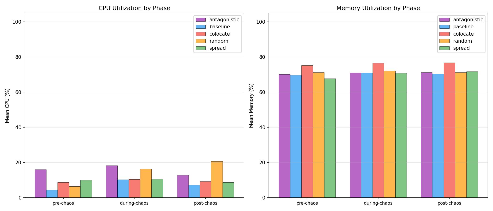
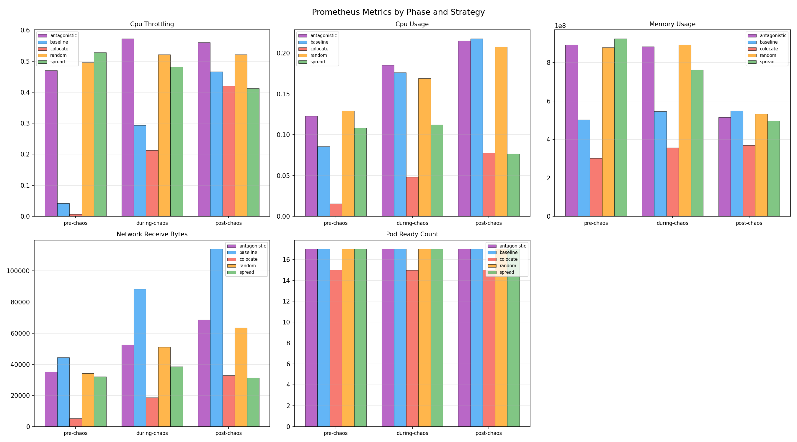

| Strategy | Runs | Avg Resilience Score | Pass Rate | Mean Recovery (ms) | Median Recovery (ms) | P95 Recovery (ms) |
|---|---|---|---|---|---|---|
| antagonistic | 3 | 0.0 | 0% | 1736.7 | 1818.1 | 3403.0 |
| baseline | 3 | 0.0 | 0% | 1541.3 | 1459.7 | 3204.0 |
| colocate | 3 | 0.0 | 0% | n/a | n/a | n/a |
| random | 3 | 0.0 | 0% | 2260.1 | 1579.4 | 8931.0 |
| spread | 3 | 0.0 | 0% | 1352.7 | 1352.7 | 2446.0 |
| Strategy | Route | Pre-Chaos Mean (ms) | During Chaos Mean (ms) | During Chaos P95 (ms) | Post-Chaos Mean (ms) | Errors During Chaos |
|---|
| Strategy | Operation | Pre-Chaos Ops/s | During Chaos Ops/s | During Chaos Latency (ms) | During Chaos Bandwidth | Post-Chaos Ops/s |
|---|---|---|---|---|---|---|
| antagonistic | redis-read | 36.4 | 42.6 | 24.07 | n/a | 45.4 |
| antagonistic | redis-write | 38.1 | 39.7 | 26.08 | n/a | 48.2 |
| antagonistic | disk-read | n/a | n/a | n/a | n/a | n/a |
| antagonistic | disk-write | n/a | 5.0 | 200.00 | 2.5 MB/s | n/a |
| baseline | redis-read | 56.4 | 54.0 | 18.61 | n/a | 52.6 |
| baseline | redis-write | 52.7 | 54.1 | 18.57 | n/a | 58.2 |
| baseline | disk-read | n/a | n/a | n/a | n/a | n/a |
| baseline | disk-write | n/a | n/a | n/a | n/a | n/a |
| colocate | redis-read | 45.5 | 56.1 | 17.95 | n/a | 61.5 |
| colocate | redis-write | 52.0 | 57.3 | 17.48 | n/a | 58.4 |
| colocate | disk-read | n/a | n/a | n/a | n/a | n/a |
| colocate | disk-write | n/a | n/a | n/a | n/a | n/a |
| random | redis-read | 51.3 | 46.3 | 22.44 | n/a | 59.8 |
| random | redis-write | 46.4 | 46.4 | 22.16 | n/a | 53.8 |
| random | disk-read | n/a | n/a | n/a | n/a | n/a |
| random | disk-write | n/a | 5.0 | 200.00 | 2.5 MB/s | 5.0 |
| spread | redis-read | 57.0 | 54.6 | 18.47 | n/a | n/a |
| spread | redis-write | 48.7 | 56.5 | 17.79 | n/a | n/a |
| spread | disk-read | n/a | n/a | n/a | n/a | n/a |
| spread | disk-write | n/a | 5.0 | 200.00 | 2.5 MB/s | n/a |
| Strategy | Phase | Mean CPU (%) | Mean Memory (%) | Samples |
|---|---|---|---|---|
| antagonistic | pre-chaos | 16.1 | 70.2 | 4 |
| antagonistic | during-chaos | 18.3 | 71.1 | 38 |
| antagonistic | post-chaos | 12.8 | 71.2 | 3 |
| baseline | pre-chaos | 4.5 | 69.8 | 4 |
| baseline | during-chaos | 10.3 | 71.0 | 39 |
| baseline | post-chaos | 7.2 | 70.5 | 3 |
| colocate | pre-chaos | 8.7 | 75.3 | 4 |
| colocate | during-chaos | 10.5 | 76.6 | 50 |
| colocate | post-chaos | 9.2 | 76.8 | 3 |
| random | pre-chaos | 6.5 | 71.2 | 4 |
| random | during-chaos | 16.4 | 72.2 | 37 |
| random | post-chaos | 20.7 | 71.2 | 4 |
| spread | pre-chaos | 10.0 | 67.8 | 4 |
| spread | during-chaos | 10.6 | 70.9 | 61 |
| spread | post-chaos | 8.7 | 71.8 | 3 |
| Strategy | Metric | Phase | Mean | Max | Samples |
|---|---|---|---|---|---|
| antagonistic | cpu_throttling | pre-chaos | 0.4701 | 0.4724 | 2 |
| antagonistic | cpu_throttling | during-chaos | 0.5727 | 0.6711 | 19 |
| antagonistic | cpu_throttling | post-chaos | 0.5605 | 0.5605 | 1 |
| antagonistic | cpu_usage | pre-chaos | 0.1227 | 0.1251 | 2 |
| antagonistic | cpu_usage | during-chaos | 0.1852 | 0.2317 | 19 |
| antagonistic | cpu_usage | post-chaos | 0.2154 | 0.2154 | 1 |
| antagonistic | memory_usage | pre-chaos | 892116992.0000 | 893976576.0000 | 2 |
| antagonistic | memory_usage | during-chaos | 883126487.5789 | 955457536.0000 | 19 |
| antagonistic | memory_usage | post-chaos | 515506176.0000 | 515506176.0000 | 1 |
| antagonistic | network_receive_bytes | pre-chaos | 35094.0134 | 35985.4650 | 2 |
| antagonistic | network_receive_bytes | during-chaos | 52618.3706 | 65708.7042 | 19 |
| antagonistic | network_receive_bytes | post-chaos | 68582.5663 | 68582.5663 | 1 |
| antagonistic | pod_ready_count | pre-chaos | 17.0000 | 17.0000 | 2 |
| antagonistic | pod_ready_count | during-chaos | 17.0000 | 17.0000 | 19 |
| antagonistic | pod_ready_count | post-chaos | 17.0000 | 17.0000 | 1 |
| baseline | cpu_throttling | pre-chaos | 0.0416 | 0.0419 | 2 |
| baseline | cpu_throttling | during-chaos | 0.2933 | 0.4436 | 20 |
| baseline | cpu_throttling | post-chaos | 0.4668 | 0.4668 | 1 |
| baseline | cpu_usage | pre-chaos | 0.0858 | 0.0867 | 2 |
| baseline | cpu_usage | during-chaos | 0.1764 | 0.2175 | 20 |
| baseline | cpu_usage | post-chaos | 0.2178 | 0.2178 | 1 |
| baseline | memory_usage | pre-chaos | 502622208.0000 | 503222272.0000 | 2 |
| baseline | memory_usage | during-chaos | 545498521.6000 | 565760000.0000 | 20 |
| baseline | memory_usage | post-chaos | 549249024.0000 | 549249024.0000 | 1 |
| baseline | network_receive_bytes | pre-chaos | 44373.3886 | 46023.1337 | 2 |
| baseline | network_receive_bytes | during-chaos | 88314.2732 | 113365.4025 | 20 |
| baseline | network_receive_bytes | post-chaos | 114053.0814 | 114053.0814 | 1 |
| baseline | pod_ready_count | pre-chaos | 17.0000 | 17.0000 | 2 |
| baseline | pod_ready_count | during-chaos | 17.0000 | 17.0000 | 20 |
| baseline | pod_ready_count | post-chaos | 17.0000 | 17.0000 | 1 |
| colocate | cpu_throttling | pre-chaos | 0.0067 | 0.0067 | 2 |
| colocate | cpu_throttling | during-chaos | 0.2131 | 0.3961 | 25 |
| colocate | cpu_throttling | post-chaos | 0.4196 | 0.4196 | 1 |
| colocate | cpu_usage | pre-chaos | 0.0157 | 0.0157 | 2 |
| colocate | cpu_usage | during-chaos | 0.0480 | 0.0761 | 25 |
| colocate | cpu_usage | post-chaos | 0.0775 | 0.0775 | 1 |
| colocate | memory_usage | pre-chaos | 302573568.0000 | 302575616.0000 | 2 |
| colocate | memory_usage | during-chaos | 357743656.9600 | 370552832.0000 | 25 |
| colocate | memory_usage | post-chaos | 370274304.0000 | 370274304.0000 | 1 |
| colocate | network_receive_bytes | pre-chaos | 5355.5877 | 5374.7038 | 2 |
| colocate | network_receive_bytes | during-chaos | 18693.6280 | 29182.3338 | 25 |
| colocate | network_receive_bytes | post-chaos | 32845.9036 | 32845.9036 | 1 |
| colocate | pod_ready_count | pre-chaos | 15.0000 | 15.0000 | 2 |
| colocate | pod_ready_count | during-chaos | 14.9600 | 15.0000 | 25 |
| colocate | pod_ready_count | post-chaos | 15.0000 | 15.0000 | 1 |
| random | cpu_throttling | pre-chaos | 0.4962 | 0.5118 | 2 |
| random | cpu_throttling | during-chaos | 0.5213 | 0.5715 | 19 |
| random | cpu_throttling | post-chaos | 0.5211 | 0.5394 | 2 |
| random | cpu_usage | pre-chaos | 0.1293 | 0.1312 | 2 |
| random | cpu_usage | during-chaos | 0.1690 | 0.2119 | 19 |
| random | cpu_usage | post-chaos | 0.2077 | 0.2152 | 2 |
| random | memory_usage | pre-chaos | 878778368.0000 | 881197056.0000 | 2 |
| random | memory_usage | during-chaos | 892458684.6316 | 956059648.0000 | 19 |
| random | memory_usage | post-chaos | 532162560.0000 | 532398080.0000 | 2 |
| random | network_receive_bytes | pre-chaos | 34215.4237 | 34515.7598 | 2 |
| random | network_receive_bytes | during-chaos | 50987.7996 | 61734.5396 | 19 |
| random | network_receive_bytes | post-chaos | 63557.7758 | 63879.0393 | 2 |
| random | pod_ready_count | pre-chaos | 17.0000 | 17.0000 | 2 |
| random | pod_ready_count | during-chaos | 17.0000 | 17.0000 | 19 |
| random | pod_ready_count | post-chaos | 17.0000 | 17.0000 | 2 |
| spread | cpu_throttling | pre-chaos | 0.5278 | 0.5391 | 2 |
| spread | cpu_throttling | during-chaos | 0.4815 | 0.5572 | 31 |
| spread | cpu_throttling | post-chaos | 0.4119 | 0.4119 | 1 |
| spread | cpu_usage | pre-chaos | 0.1083 | 0.1086 | 2 |
| spread | cpu_usage | during-chaos | 0.1123 | 0.1306 | 31 |
| spread | cpu_usage | post-chaos | 0.0765 | 0.0765 | 1 |
| spread | memory_usage | pre-chaos | 924592128.0000 | 926535680.0000 | 2 |
| spread | memory_usage | during-chaos | 761638647.7419 | 972124160.0000 | 31 |
| spread | memory_usage | post-chaos | 496889856.0000 | 496889856.0000 | 1 |
| spread | network_receive_bytes | pre-chaos | 32125.4449 | 32836.6281 | 2 |
| spread | network_receive_bytes | during-chaos | 38535.2572 | 43466.3839 | 31 |
| spread | network_receive_bytes | post-chaos | 31447.1113 | 31447.1113 | 1 |
| spread | pod_ready_count | pre-chaos | 17.0000 | 17.0000 | 2 |
| spread | pod_ready_count | during-chaos | 17.0000 | 17.0000 | 31 |
| spread | pod_ready_count | post-chaos | 17.0000 | 17.0000 | 1 |





